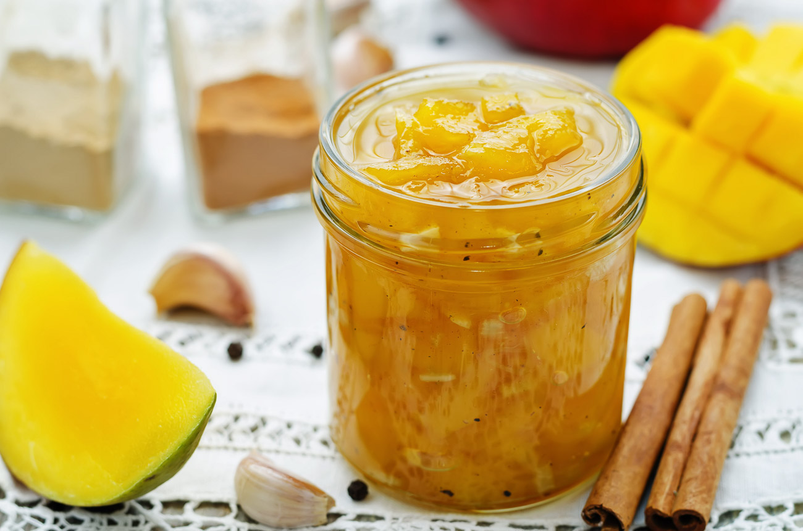

Mermelada de mango.

Ingredientes:
500 gramos de mango.
250 gramos de azúcar.
1 limón.
Método de preparación:
- En primer lugar, pelamos y troceamos el mango. Después pesamos la pulpa sin piel ni huesos. El mango pesaba 500 g así que se utilizará 250 gramos de azúcar, ya que hay que utilizar la mitad de cantidad de azúcar que de fruta.
- Después lavamos y exprimimos un limón.
- Introducimos en una cazuela el mango troceado, 250 g de azúcar y el zumo de un limón. Removemos un poco la mezcla y la ponemos a cocer a fuego medio durante unos 20 minutos. Hay que remover la mermelada de vez en cuando para evitar que se pegue en el fondo de la cacerola. Transcurridos 20 minutos, la fruta se habrá quedado bastante tierna, así que ya podemos apagar el fuego.
- Una vez hayamos retirado la mermelada del fuego, hay que pasarle la batidora hasta lograr una textura homogénea.
- Por último, hay que hervir un par de tarros de cristal en una olla para esterilizarlos y verter dentro la mermelada. Hay que tener mucho cuidado para no quemarnos. Después cerramos bien los tarros y los ponemos boca abajo hasta que se enfríen.
- Ahora puedes almacenar esta deliciosa mermelada de mango casera en un lugar fresco, seco y alejado de la luz solar. Así se conservará en buen estado durante unos seis meses. Recuerda que, una vez abierta, hay que guardar la mermelada en la nevera o refrigerador para que se conserve adecuadamente.